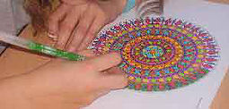

Spécialisée en relaxation dynamique
et en relation d’aide

« Le potentiel de l’élève est souvent entravé par le fait qu’une grande partie de son énergie est utilisée à résoudre de nombreux problèmes. Ce qu’il reste de cette énergie est parfois trop faible pour assurer normalement sa scolarité... »
Le dessin centré améliore également la cohésion d’un groupe, notamment lors des réalisations collectives.
Une salle de classe ou de réunions, la cantine ou le self, je m’adapte à vos contraintes... pas besoin d’espace, tous les établissements scolaires peuvent mettre en place cette activité à moindre frais.
Des élèves de l’école primaire, mais aussi des collégiens, lycéens et des étudiants de tous niveaux en quête de mieux-être.
Vous souhaitez mettre en place un atelier collectif hebdomadaire de relaxation dynamique par le dessin centré au sein de votre établissement scolaire ? Pour en savoir plus et connaître mes tarifs merci de me contacter afin que nous évaluions et définissions ensemble l’objectif des ateliers ainsi que les modalités d’intervention.